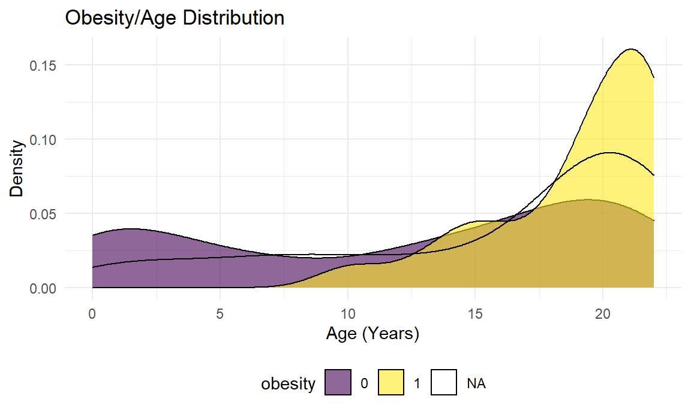
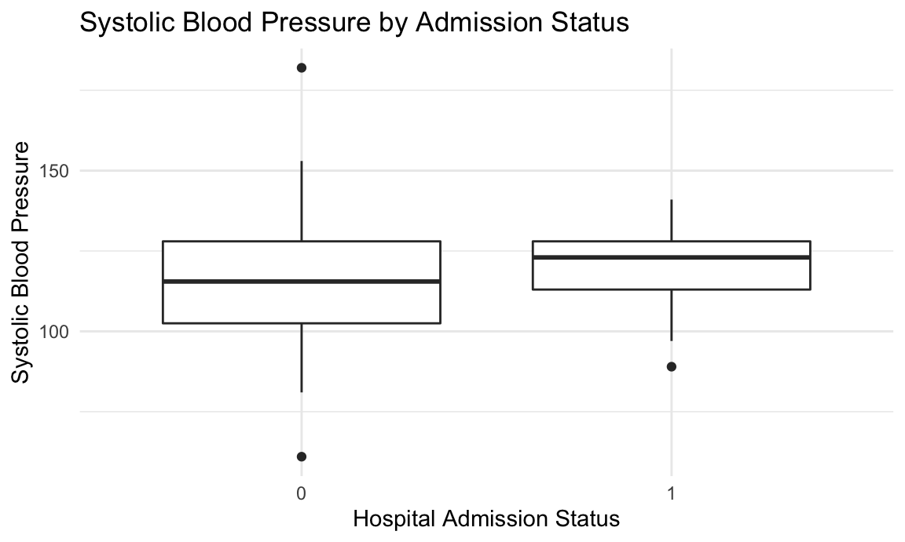

Predictors of Hospitalization in Pediatric Patients with COVID-19

Table of Contents
- Introduction
- Prior Studies
- Tidying The Data
- Exploratory Analyses
- Dashboard
- Model Building
- Discussion
- References
Project Motivation
While the clinical characteristics and hospital courses of patients with COVID-19 have been previously described, particularly in adults, the risk factors associated with hospitalization in pediatric patients has been understudied. Fortunately, COVID-19 seems to affect children generally less severely than adults. However, some children do become ill enough to require hospitalization. Moreover, as the number of cases continues to rise across the country, COVID-19 cases in pediatric patients also continues to increase.
Here, we present our analyses of a dataset of 375 pediatric patients who returned a positive SARS-CoV-2 RT PCR test at a single tertiary care medical center in New York City from the beginning of the COVID-19 pandemic until October 1, 2020.
The Dataset
The dataset contains de-identified patient health information consisting of age (from 0 to up to 23 years), demographic data (including biological sex, zip code of residence, and a socioeconomic status variable), whether there was a preceding visit to the Emergency Department, any past medical history of asthma, obesity, and/or diabetes, and whether there was an admission to the intensive care unit.
The goal of this project was to perform an exploratory analysis of this dataset in order to begin to assess the risk factors associated with pediatric hospitalization for COVID-19 infection. Prior studies have shown that clinical features including low oxygen saturation and abnormal chest imaging are predictive of the need for hospitalization. Our focus in this present study was more on demographic characteristics and pre-existing comorbidities. We hypothesize that increasing age, a past medical history of asthma, obesity, and diabetes are positively associated with hospitalization.
Prior Studies
Prior studies in children have focused on the clinical characteristics after hospitalization, as well as hospital course 1, 2. In particular, some children have required admission to the intensive care unit and some have developed a multi-system inflammatory syndrome *3. Fortunately, most children in the community seem to fare well with few developing critical illness.
Tidying The Data
First we load our necessary packages and set ggplot preferences.
library(tidyverse)
library(usa)
library(mice)
knitr::opts_chunk$set(
fig.width = 6,
fig.asp = .6,
out.width = "90%")
theme_set(theme_minimal() + theme(legend.position = "bottom"))
options(
ggplot2.continuous.colour = "viridis",
ggplot2.continuous.fill = "viridis")
scale_colour_discrete = scale_color_viridis_d
scale_fill_discrete = scale_fill_viridis_d
knitr::opts_chunk$set(comment = NA, message = FALSE, warning = FALSE, echo = TRUE)Now, we will load the data and take a look.
# Load the data
ped_covid =
read_csv("./data/p8105_final_ped_covid.csv")This is a de-identified dataset of pediatric patients from a tertiary care medical center in New York City who tested positive for COVID-19 via the SARS-CoV-2 RT PCR test. The age range in the study is 0 to 22 years of age. An id number for each patient has been randomly generated. There are 375 rows (patients) and 30 columns in this dataset. The variables included in this dataset are id, admitted, age, date_of_birth, ethnicity, gender, censusblock, censusblockgroup, censustract, city, race, ses, state, zip_code_set, eventdatetime, outcomeadmission_admission_1inpatient_admit_service, bmi_yes_or_no, bmi_event_date_time, bmi_value, asthma_date_time, asthma_dx, diabetes_date_time, diabetes_dx, icu_yes_no, icu_date_time, systolic_bp_event_date_time, systolic_bp_value, ed_yes_no_0_365_before, admission_primary_dx, admission_apr_drg. Some of the important variables are date and time of positive covid test (“eventdatetime”), whether the patient was admitted (“admitted”), whether there was a preceding emergency department visit (“ed_yes_no_0_365_before”), whether the patient needed intensive care admission (“icu_yes_no”) and date and time of icu admission (“icu_date_time”), demographic data (age, gender, ethnicity, race, zip code data - predominantly in the Bronx), some past medical history data (bmi data, asthma data, diabetes data) and one vital sign datum (systolic blood pressure).
The dataset is not tidy for a number of reasons including but not limited to:
- Race seems to encompass Black, Asian, and White patients but whether patients are Hispanic or not is only coded under ethnicity. Although this is a complicated issue, for simplicity’s sake we combined ethnicity and race into a single variable.
- Presence of a medical history of asthma and diabetes were indicated by presence of an International Classification of Disease Code (ICD). However, the same ICD code was not used for all patients. While there are certainly many subtleties in the severity of asthma and type/severity of diabetes, for ease of analysis we chose to simply code asthma and diabetes as binary variables.
- We chose to add a variable called “obesity” which was a binary variable that was present when body mass index (BMI) was greater than or equal to 30 and absent when it was less than 30. Of note, in pediatric patients, true classification of obesity is dependent on the patient’s age and place on a growth chart.
ped_covid =
read_csv("./data/p8105_final_ped_covid.csv") %>%
mutate(
ethnicity_race = case_when(
race == "R3 Black or African-American" ~ "black",
race == "R2 Asian" ~ "asian",
race == "R5 White" ~ "caucasian",
race == "R1 American Indian or Alaska Native" ~ "american indian",
race == "Multiple Selected" ~ "multiple",
ethnicity == "E1 Spanish/Hispanic/Latino" ~ "latino"
)
) %>%
mutate(
asthma = replace_na(asthma_dx, 0),
asthma = str_replace(asthma, ".*J.*", "1"),
diabetes = replace_na(diabetes_dx, 0),
diabetes = str_replace(diabetes, ".*E.*", "1"),
zip = as.character(zip_code_set),
service = outcomeadmission_admission_1inpatient_admit_service,
ed = ed_yes_no_0_365_before,
admission_dx = admission_apr_drg,
icu = icu_yes_no
) %>%
mutate(obesity = case_when(
bmi_value >= 30 ~ "1",
bmi_value < 30 ~"0"
))We noted that the dataset contained information about zipcode but not latitude and longitude. To add this information we merged zipcodes with a file in the usa package containing information about latitude and longitude for each zipcode.
# Merge zipcode data with latitude and longitude.
zipcode_df =
usa::zipcodes
ped_covid =
left_join(ped_covid, zipcode_df, by = "zip") %>%
select(admitted, age, gender, ses, zip, eventdatetime, bmi_value, icu, icu_date_time,
systolic_bp_value, ethnicity_race, asthma, diabetes, zip, service, ed, admission_dx,
city.y, obesity, lat, long) %>%
mutate_at(c("admitted", "icu", "ethnicity_race", "asthma", "diabetes",
"ed", "city.y", "obesity"), as.factor) %>%
mutate(
gender = factor(gender, levels = c("F", "M")),
ethnicity_race = factor(ethnicity_race, levels = c("caucasian", "black", "latino", "asian", "american indian", "multiple", "NA"))
) %>%
rename(city = city.y) An additional issue in the data is that it contains significant amounts of missing data. We thus used the mice package in R to impute missing data. This package uses sequential regression multiple imputation, which is advantageous over single imputations in that it accounts for the statistical uncertainty in the imputation process.
# Impute missing data for use in model_building
impute = mice(ped_covid, m=3, seed=111)
datacomplete = complete(impute,2)
# Export csv
write_csv(datacomplete, "./data/datacomplete.csv")Exploratory Analyses
To perform exploratory analyses, we loaded some additional libraries.
library(aod)
library(patchwork)
library(ResourceSelection)We started exploring the data by generating various ggplots.
Age
There appears to be a bimodal distribution of hospital admission as a function of age. Among infants and toddlers less than 5 years of age who test positive for COVID-19, more are admitted than not admitted. However, after 16 years of age, hospitalizations for COVID-19 infection appear to be less than non-hospitalizations.
Some pediatric patients require admission to the Intensive Care Unit (ICU). Fewer infants and toddlers with COVID-19 infection require admission to the ICU until about 3 years of age. Beginning at 10 years of age, there seems to be a steeper rise in the density of ICU admissions for children with COVID-19 infection compared to non-ICU admissions.
admit_p =
ped_covid %>%
ggplot(aes(x = age, fill = admitted)) +
geom_density(alpha = .6) +
labs(
title = "Admittance/Age Distribution",
x = "Age (Years)",
y = "Density") +
theme(legend.position = "bottom")
icu_p =
ped_covid %>%
ggplot(aes(x = age, fill = icu)) +
geom_density(alpha = .6) +
labs(
title = "ICU/Age Distribution",
x = "Age (Years)",
y = "Density") +
theme(legend.position = "bottom")
admit_p / icu_p
Obesity, diabetes, and asthma
The distribution of obesity, diabetes, and asthma diagnoses in pediatric patients with COVID-19 infection by age are show below. Obesity, as defined as a body mass index (BMI) of > 30, is general not present at ages less than 10 years. After 10 years, the prevalence of obesity increases. This is generally true for diabetes and asthma as well.
obesity_p =
ped_covid %>%
ggplot(aes(x = age, fill = obesity)) +
geom_density(alpha = .6) +
labs(
title = "Obesity/Age Distribution",
x = "Age (Years)",
y = "Density") +
theme(legend.position = "bottom")
diabetes_p =
ped_covid %>%
ggplot(aes(x = age, fill = diabetes)) +
geom_density(alpha = .6) +
labs(
title = "Diabetes/Age Distribution",
x = "Age (Years)",
y = "Density") +
theme(legend.position = "bottom")
asthma_p =
ped_covid %>%
ggplot(aes(x = age, fill = asthma)) +
geom_density(alpha = .6) +
labs(
title = "Asthma/Age Distribution",
x = "Age (Years)",
y = "Density") +
theme(legend.position = "bottom")
obesity_p / diabetes_p / asthma_p
Box plots
Below, we explore first systolic blood pressure, BMI, and socioeconomic status (SES) by admission status. The median first systolic pressure is higher among admitted patients compared to non-admitted patients. BMI appears to be similar, with some high BMI outliers in the non-hospitalized group. Median SES is lower among admitted patients.
bp_p =
ped_covid %>%
ggplot(aes(x = icu, y = systolic_bp_value)) +
geom_boxplot() +
labs(
title = "Systolic Blood Pressure by Admission Status",
x = "Hospital Admission Status",
y = "Systolic Blood Pressure")
bmi_p =
ped_covid %>%
ggplot(aes(x = icu, y = bmi_value)) +
geom_boxplot() +
labs(
title = "BMI by Admission Status",
x = "Hospital Admission Status",
y = "BMI Value")
ses_p =
ped_covid %>%
ggplot(aes(x = icu, y = ses)) +
geom_boxplot() +
labs(
title = "Socioeconomic Status by Admission Status",
x = "Hospital Admission Status",
y = "SES Measure")
bp_p / bmi_p / ses_p
Possible Models
model =
glm(
admitted ~ age + gender + ethnicity_race + asthma + diabetes + obesity,
data = ped_covid,
family = binomial()
) %>%
broom::tidy() %>%
mutate(
OR = exp(estimate),
CI_lower = exp(estimate - 1.96 * std.error),
CI_upper = exp(estimate + 1.96 * std.error)
) %>%
select(term, OR, starts_with("CI"), p.value) %>%
knitr::kable(digits = 3)
model| term | OR | CI_lower | CI_upper | p.value |
|---|---|---|---|---|
| (Intercept) | 5.101 | 1.134 | 22.939 | 0.034 |
| age | 0.938 | 0.897 | 0.981 | 0.005 |
| genderM | 0.728 | 0.409 | 1.295 | 0.280 |
| ethnicity_raceblack | 0.336 | 0.086 | 1.318 | 0.118 |
| ethnicity_racelatino | 0.344 | 0.092 | 1.286 | 0.113 |
| ethnicity_raceasian | 0.323 | 0.044 | 2.371 | 0.266 |
| ethnicity_raceamerican indian | 0.000 | 0.000 | Inf | 0.986 |
| asthma1 | 0.931 | 0.468 | 1.856 | 0.840 |
| diabetes1 | 3.764 | 1.100 | 12.880 | 0.035 |
| obesity1 | 2.166 | 1.070 | 4.384 | 0.032 |
initial_fit =
glm(admitted ~ age + gender + ethnicity_race + asthma + diabetes + obesity,
family = binomial(link = "logit"),
data = ped_covid) %>%
broom::tidy() %>%
mutate(OR = exp(estimate)) %>%
select(term, p.value, everything()) %>%
knitr::kable(digits = 3)
initial_fit| term | p.value | estimate | std.error | statistic | OR |
|---|---|---|---|---|---|
| (Intercept) | 0.034 | 1.629 | 0.767 | 2.124 | 5.101 |
| age | 0.005 | -0.064 | 0.023 | -2.793 | 0.938 |
| genderM | 0.280 | -0.318 | 0.294 | -1.081 | 0.728 |
| ethnicity_raceblack | 0.118 | -1.089 | 0.697 | -1.564 | 0.336 |
| ethnicity_racelatino | 0.113 | -1.068 | 0.673 | -1.586 | 0.344 |
| ethnicity_raceasian | 0.266 | -1.131 | 1.018 | -1.112 | 0.323 |
| ethnicity_raceamerican indian | 0.986 | -15.872 | 882.744 | -0.018 | 0.000 |
| asthma1 | 0.840 | -0.071 | 0.352 | -0.202 | 0.931 |
| diabetes1 | 0.035 | 1.325 | 0.628 | 2.111 | 3.764 |
| obesity1 | 0.032 | 0.773 | 0.360 | 2.148 | 2.166 |
# hl <- hoslem.test(initial_fit$admitted, fitted(initial_fit), g = 10)
# hl
# wald.test(b = coef(initial_fit), Sigma = vcov(initial_fit), Terms = 4:8)complex_fit =
glm(admitted ~ age + gender + ethnicity_race + asthma + diabetes + bmi_value + systolic_bp_value + ses,
family = binomial(link = "logit"),
data = ped_covid) %>%
broom::tidy() %>%
mutate(OR = exp(estimate)) %>%
select(term, p.value, everything()) %>%
knitr::kable(digits = 3)
complex_fit| term | p.value | estimate | std.error | statistic | OR |
|---|---|---|---|---|---|
| (Intercept) | 0.996 | 18.449 | 4081.440 | 0.005 | 1.029231e+08 |
| age | 0.202 | -0.138 | 0.108 | -1.276 | 8.710000e-01 |
| genderM | 0.178 | -1.088 | 0.808 | -1.347 | 3.370000e-01 |
| ethnicity_raceblack | 0.997 | -17.730 | 4081.438 | -0.004 | 0.000000e+00 |
| ethnicity_racelatino | 0.997 | -17.559 | 4081.438 | -0.004 | 0.000000e+00 |
| ethnicity_raceasian | 1.000 | -0.576 | 11502.475 | 0.000 | 5.620000e-01 |
| asthma1 | 0.495 | 0.649 | 0.950 | 0.682 | 1.913000e+00 |
| diabetes1 | 0.995 | 17.668 | 3036.851 | 0.006 | 4.711645e+07 |
| bmi_value | 0.246 | 0.064 | 0.055 | 1.160 | 1.066000e+00 |
| systolic_bp_value | 0.688 | 0.013 | 0.033 | 0.402 | 1.014000e+00 |
| ses | 0.915 | -0.015 | 0.142 | -0.107 | 9.850000e-01 |
play_fit =
glm(admitted ~ age + gender + asthma + diabetes + bmi_value + systolic_bp_value + ses,
family = binomial(link = "logit"),
data = ped_covid) %>%
broom::tidy() %>%
mutate(OR = exp(estimate)) %>%
select(term, p.value, everything()) %>%
knitr::kable(digits = 3)
play_fit| term | p.value | estimate | std.error | statistic | OR |
|---|---|---|---|---|---|
| (Intercept) | 0.665 | 1.460 | 3.369 | 0.433 | 4.307 |
| age | 0.132 | -0.150 | 0.100 | -1.508 | 0.860 |
| genderM | 0.250 | -0.922 | 0.802 | -1.150 | 0.398 |
| asthma1 | 0.460 | 0.670 | 0.908 | 0.738 | 1.954 |
| diabetes1 | 0.992 | 16.932 | 1740.922 | 0.010 | 22563376.550 |
| bmi_value | 0.183 | 0.068 | 0.051 | 1.331 | 1.070 |
| systolic_bp_value | 0.777 | 0.009 | 0.032 | 0.283 | 1.009 |
| ses | 0.811 | -0.032 | 0.136 | -0.239 | 0.968 |
Asthma and Diabetes seem to be important predictors
icu1_fit =
glm(icu ~ age + gender + ethnicity_race + asthma + diabetes + obesity,
family = binomial(link = "logit"),
data = ped_covid) %>%
broom::tidy() %>%
mutate(OR = exp(estimate)) %>%
select(term, p.value, everything()) %>%
knitr::kable(digits = 3)
icu1_fit| term | p.value | estimate | std.error | statistic | OR |
|---|---|---|---|---|---|
| (Intercept) | 0.026 | -3.103 | 1.396 | -2.222 | 0.045 |
| age | 0.802 | -0.011 | 0.044 | -0.250 | 0.989 |
| genderM | 0.567 | 0.319 | 0.557 | 0.572 | 1.376 |
| ethnicity_raceblack | 0.594 | 0.669 | 1.254 | 0.533 | 1.952 |
| ethnicity_racelatino | 0.766 | 0.362 | 1.213 | 0.298 | 1.436 |
| ethnicity_raceasian | 0.992 | -14.378 | 1489.071 | -0.010 | 0.000 |
| ethnicity_raceamerican indian | 0.997 | -14.781 | 3956.181 | -0.004 | 0.000 |
| asthma1 | 0.503 | -0.463 | 0.691 | -0.670 | 0.630 |
| diabetes1 | 0.000 | 2.650 | 0.677 | 3.912 | 14.147 |
| obesity1 | 0.709 | -0.271 | 0.727 | -0.373 | 0.763 |
icu2_fit =
glm(icu ~ age + gender + ethnicity_race + asthma + diabetes + bmi_value + systolic_bp_value + ses,
family = binomial(link = "logit"),
data = ped_covid) %>%
broom::tidy() %>%
mutate(OR = exp(estimate)) %>%
select(term, p.value, everything()) %>%
knitr::kable(digits = 3)
icu2_fit| term | p.value | estimate | std.error | statistic | OR |
|---|---|---|---|---|---|
| (Intercept) | 0.994 | -16.299 | 2351.533 | -0.007 | 0.000000e+00 |
| age | 0.432 | -0.113 | 0.143 | -0.785 | 8.940000e-01 |
| genderM | 0.985 | 0.022 | 1.184 | 0.019 | 1.023000e+00 |
| ethnicity_raceblack | 0.994 | 16.711 | 2351.529 | 0.007 | 1.809267e+07 |
| ethnicity_racelatino | 0.994 | 18.863 | 2351.529 | 0.008 | 1.557080e+08 |
| ethnicity_raceasian | 1.000 | 1.000 | 6933.578 | 0.000 | 2.718000e+00 |
| asthma1 | 0.928 | 0.140 | 1.544 | 0.091 | 1.150000e+00 |
| diabetes1 | 0.002 | 5.024 | 1.645 | 3.053 | 1.520480e+02 |
| bmi_value | 0.260 | -0.064 | 0.057 | -1.125 | 9.380000e-01 |
| systolic_bp_value | 0.728 | -0.016 | 0.046 | -0.348 | 9.840000e-01 |
| ses | 0.942 | 0.015 | 0.204 | 0.073 | 1.015000e+00 |
icu3_fit =
glm(icu ~ age + gender + asthma + diabetes + bmi_value + systolic_bp_value + ses,
family = binomial(link = "logit"),
data = ped_covid) %>%
broom::tidy() %>%
mutate(OR = exp(estimate)) %>%
select(term, p.value, everything()) %>%
knitr::kable(digits = 3)
icu3_fit| term | p.value | estimate | std.error | statistic | OR |
|---|---|---|---|---|---|
| (Intercept) | 0.391 | 3.508 | 4.088 | 0.858 | 33.388 |
| age | 0.577 | -0.067 | 0.120 | -0.557 | 0.935 |
| genderM | 0.738 | -0.344 | 1.029 | -0.334 | 0.709 |
| asthma1 | 0.259 | -1.538 | 1.361 | -1.130 | 0.215 |
| diabetes1 | 0.001 | 4.728 | 1.376 | 3.436 | 113.066 |
| bmi_value | 0.512 | -0.029 | 0.044 | -0.656 | 0.971 |
| systolic_bp_value | 0.294 | -0.044 | 0.042 | -1.049 | 0.957 |
| ses | 0.576 | -0.093 | 0.167 | -0.559 | 0.911 |
Dashboard
Model Building
Our next goal was to build an interactive predictive tool allowing users to see the effects of changing certain predictors on risk of hospitalization. To do this we examined several predictive models.
Based on our exploratory analysis as well as a priori knowledge, we incorporated the following variables into our predictive model for hospitalization:
- Age
- BMI value
- Systolic blood pressure value
- Race
- History of asthma diagnosis
- History of diabetes diagnosis
Our goal in the following analyses was to examine the area under the operating characteristic curve (AUC) for various models. We used the caret package in R, which allows easy implentation and tuning of various different machine learning algorithms.
First we loaded in the data and divided the data into training and testing sets using a 2:1 ratio.
# Load in the data and divide into training and testing sets
library(caret)
library(tidyverse)
library(ROCR)
datacomplete = read_csv("./data/datacomplete.csv") %>%
mutate_at(c("admitted", "ethnicity_race", "asthma", "diabetes"), as.factor) %>%
select(admitted, age, bmi_value, systolic_bp_value, ethnicity_race, asthma, diabetes)
train_data =
datacomplete %>%
slice(1:250)
test_data =
datacomplete %>%
slice(251:375)Random Forest Model
First we used a random forest model, which is an ensemble learning method for classification or regression which constructs a multitude of decision trees using a training set and outputs the class that is the mode of the classes of the individual trees.
myFolds = createFolds(train_data$admitted, k = 5)
rfControl = trainControl(
summaryFunction = twoClassSummary,
classProbs = TRUE,
verboseIter = TRUE,
savePredictions = TRUE,
index = myFolds
)
set.seed(123)
rfmodel = caret::train(
admitted ~.,
data = train_data,
metric = "ROC",
method = "ranger",
trControl = rfControl
)+ Fold1: mtry= 2, min.node.size=1, splitrule=gini
- Fold1: mtry= 2, min.node.size=1, splitrule=gini
+ Fold1: mtry= 6, min.node.size=1, splitrule=gini
- Fold1: mtry= 6, min.node.size=1, splitrule=gini
+ Fold1: mtry=10, min.node.size=1, splitrule=gini
- Fold1: mtry=10, min.node.size=1, splitrule=gini
+ Fold1: mtry= 2, min.node.size=1, splitrule=extratrees
- Fold1: mtry= 2, min.node.size=1, splitrule=extratrees
+ Fold1: mtry= 6, min.node.size=1, splitrule=extratrees
- Fold1: mtry= 6, min.node.size=1, splitrule=extratrees
+ Fold1: mtry=10, min.node.size=1, splitrule=extratrees
- Fold1: mtry=10, min.node.size=1, splitrule=extratrees
+ Fold2: mtry= 2, min.node.size=1, splitrule=gini
- Fold2: mtry= 2, min.node.size=1, splitrule=gini
+ Fold2: mtry= 6, min.node.size=1, splitrule=gini
- Fold2: mtry= 6, min.node.size=1, splitrule=gini
+ Fold2: mtry=10, min.node.size=1, splitrule=gini
- Fold2: mtry=10, min.node.size=1, splitrule=gini
+ Fold2: mtry= 2, min.node.size=1, splitrule=extratrees
- Fold2: mtry= 2, min.node.size=1, splitrule=extratrees
+ Fold2: mtry= 6, min.node.size=1, splitrule=extratrees
- Fold2: mtry= 6, min.node.size=1, splitrule=extratrees
+ Fold2: mtry=10, min.node.size=1, splitrule=extratrees
- Fold2: mtry=10, min.node.size=1, splitrule=extratrees
+ Fold3: mtry= 2, min.node.size=1, splitrule=gini
- Fold3: mtry= 2, min.node.size=1, splitrule=gini
+ Fold3: mtry= 6, min.node.size=1, splitrule=gini
- Fold3: mtry= 6, min.node.size=1, splitrule=gini
+ Fold3: mtry=10, min.node.size=1, splitrule=gini
- Fold3: mtry=10, min.node.size=1, splitrule=gini
+ Fold3: mtry= 2, min.node.size=1, splitrule=extratrees
- Fold3: mtry= 2, min.node.size=1, splitrule=extratrees
+ Fold3: mtry= 6, min.node.size=1, splitrule=extratrees
- Fold3: mtry= 6, min.node.size=1, splitrule=extratrees
+ Fold3: mtry=10, min.node.size=1, splitrule=extratrees
- Fold3: mtry=10, min.node.size=1, splitrule=extratrees
+ Fold4: mtry= 2, min.node.size=1, splitrule=gini
- Fold4: mtry= 2, min.node.size=1, splitrule=gini
+ Fold4: mtry= 6, min.node.size=1, splitrule=gini
- Fold4: mtry= 6, min.node.size=1, splitrule=gini
+ Fold4: mtry=10, min.node.size=1, splitrule=gini
- Fold4: mtry=10, min.node.size=1, splitrule=gini
+ Fold4: mtry= 2, min.node.size=1, splitrule=extratrees
- Fold4: mtry= 2, min.node.size=1, splitrule=extratrees
+ Fold4: mtry= 6, min.node.size=1, splitrule=extratrees
- Fold4: mtry= 6, min.node.size=1, splitrule=extratrees
+ Fold4: mtry=10, min.node.size=1, splitrule=extratrees
- Fold4: mtry=10, min.node.size=1, splitrule=extratrees
+ Fold5: mtry= 2, min.node.size=1, splitrule=gini
- Fold5: mtry= 2, min.node.size=1, splitrule=gini
+ Fold5: mtry= 6, min.node.size=1, splitrule=gini
- Fold5: mtry= 6, min.node.size=1, splitrule=gini
+ Fold5: mtry=10, min.node.size=1, splitrule=gini
- Fold5: mtry=10, min.node.size=1, splitrule=gini
+ Fold5: mtry= 2, min.node.size=1, splitrule=extratrees
- Fold5: mtry= 2, min.node.size=1, splitrule=extratrees
+ Fold5: mtry= 6, min.node.size=1, splitrule=extratrees
- Fold5: mtry= 6, min.node.size=1, splitrule=extratrees
+ Fold5: mtry=10, min.node.size=1, splitrule=extratrees
- Fold5: mtry=10, min.node.size=1, splitrule=extratrees
Aggregating results
Selecting tuning parameters
Fitting mtry = 2, splitrule = gini, min.node.size = 1 on full training setpred_rf = predict(rfmodel,test_data,type="prob")
pred_rf = pred_rf$yes
auc_rf = as.numeric(ROCR::performance(prediction(pred_rf,test_data$admitted),"auc")@y.values)
auc_rf[1] 0.5609756Our AUC with the random forest model is 0.5609756.
XGBoost Model
The XGBoost model is a powerful ensemble machine learning algorithm that implements gradient boosted decision trees.
xgbTrainingControl = trainControl(method = "CV",
number = 5,
savePredictions = TRUE,
classProbs = TRUE,
summaryFunction = twoClassSummary,
verboseIter = F)
nrounds = 1000
xgb_grid = expand.grid(
nrounds = seq(from = 200, to = nrounds, by = 50),
eta = c(0.025, 0.05, 0.1, 0.3),
max_depth = c(2, 3, 4, 5, 6),
gamma = 0,
colsample_bytree = 1,
min_child_weight = 1,
subsample = 1
)
set.seed(123)
fit_xgb = caret::train(admitted~.,
data = train_data,
metric = "ROC",
method = "xgbTree",
tuneGrid = xgb_grid,
trControl = xgbTrainingControl)
pred_xgb = predict(fit_xgb,test_data,type="prob")
pred_xgb = pred_xgb$yes
auc_xgb = as.numeric(ROCR::performance(ROCR::prediction(pred_xgb,test_data$admitted),"auc")@y.values)
auc_xgb[1] 0.6304594The AUC generated by the XGB model is 0.6304594.
Glmnet Model
Next we explored the use of a generalized linear model through Glmnet, which fits a generalized linear model via penalized maximum likelihood.
glmnetControl = trainControl(
method = "cv",
number = 10,
summaryFunction = twoClassSummary,
classProbs = TRUE,
verboseIter = TRUE
)
set.seed(123)
glmnetmodel = caret::train(
admitted ~. ,
data=train_data,
tuneGrid = expand.grid(
alpha=0:1,
lambda=seq(0.0001,1, length=20)
),
method = "glmnet",
trControl = glmnetControl,
preProcess= c("center","scale")
)+ Fold01: alpha=0, lambda=1
- Fold01: alpha=0, lambda=1
+ Fold01: alpha=1, lambda=1
- Fold01: alpha=1, lambda=1
+ Fold02: alpha=0, lambda=1
- Fold02: alpha=0, lambda=1
+ Fold02: alpha=1, lambda=1
- Fold02: alpha=1, lambda=1
+ Fold03: alpha=0, lambda=1
- Fold03: alpha=0, lambda=1
+ Fold03: alpha=1, lambda=1
- Fold03: alpha=1, lambda=1
+ Fold04: alpha=0, lambda=1
- Fold04: alpha=0, lambda=1
+ Fold04: alpha=1, lambda=1
- Fold04: alpha=1, lambda=1
+ Fold05: alpha=0, lambda=1
- Fold05: alpha=0, lambda=1
+ Fold05: alpha=1, lambda=1
- Fold05: alpha=1, lambda=1
+ Fold06: alpha=0, lambda=1
- Fold06: alpha=0, lambda=1
+ Fold06: alpha=1, lambda=1
- Fold06: alpha=1, lambda=1
+ Fold07: alpha=0, lambda=1
- Fold07: alpha=0, lambda=1
+ Fold07: alpha=1, lambda=1
- Fold07: alpha=1, lambda=1
+ Fold08: alpha=0, lambda=1
- Fold08: alpha=0, lambda=1
+ Fold08: alpha=1, lambda=1
- Fold08: alpha=1, lambda=1
+ Fold09: alpha=0, lambda=1
- Fold09: alpha=0, lambda=1
+ Fold09: alpha=1, lambda=1
- Fold09: alpha=1, lambda=1
+ Fold10: alpha=0, lambda=1
- Fold10: alpha=0, lambda=1
+ Fold10: alpha=1, lambda=1
- Fold10: alpha=1, lambda=1
Aggregating results
Selecting tuning parameters
Fitting alpha = 1, lambda = 0.0527 on full training setpred_glmnet = predict(glmnetmodel,test_data,type="prob")
pred_glmnet = pred_glmnet$yes
auc_glmnet = as.numeric(ROCR::performance(prediction(pred_glmnet,test_data$admitted),"auc")@y.values)
auc_glmnet[1] 0.6202496The AUC of the glmnet model is 0.6202496.
SPLS Model
Finally, we tried a partial least squares model, which is a linear regression method that can deal with large numbers of predictors, small sample size, and high collinearity among predictors. That is less the case in our trimmed down set of predictors, but nonetheless we decided to examine how it would perform in our dataset.
#SPLS
train_grid = expand.grid(K =c(3,4,5,6,7,8,9),eta =c(0.35,0.4,0.45,0.5,0.55,0.6,0.7,0.8,0.9),
kappa=0.5)
set.seed(123)
plsFit = caret::train(admitted~.,
data = train_data,
method = "spls",
tuneGrid = train_grid,
trControl = xgbTrainingControl,
metric = "ROC")
pred_plsda = predict(plsFit,test_data,type="prob")
pred_plsda = pred_plsda$yes
auc_plsda = as.numeric(ROCR::performance(prediction(pred_plsda,test_data$admitted),"auc")@y.values)
auc_plsdaThe AUC for the SPLS model is 0.6101815.
Overall, all the AUCs are much lower than what would be considered useful in clinical practice. However, given that the goal of our analyses is mainly exploratory at this point, we then built an interactive predictive tool allowing users to see the effects of changing certain predictors on risk of hospitalization. Results should clearly be interpreted with caution and the models will benefit from the addition of other predictors which can be added on as this dataset grows. We ultimately chose to use the random forest model, given similar AUCs between each of the models and the relatively quick speed at which the random forest model generates its predictions.
Code for the shiny app can be found at Lusha’s github.
Discussion
We performed an exploratory analysis of a dataset of 375 pediatric patients who tested positive for COVID-19 and assessed predictors for hospitalization. We found age, obesity, and diabetes were associated with the need for hospitalization in multivariate logistic regression modeling. Gender, ethnicity, and asthma were not found to be significantly associated with the need for hospitalization. There are a number of important limitations in this dataset that may affect the validity of the study results. First, the availability of testing was limited in the early phases of the COVID-19 pandemic. This decreased its diagnostic utility, with SARS-CoV-2 RT PCR testing done in a confirmatory manner sometimes after the decision to admit was already made. This differential testing may affect the validity of study results. The sample size of 375 from a single tertiary care medical center is also limited, reflecting the relative overall decreased severity of illness of COVID-19 in pediatric patients compared to adults. Asthma was coded in a simplistic manner that does not reflect the complexity of this comorbidity. For example, asthma can vary in severity from, for example, mild intermittent to status asthmaticus. Our coding of asthma does not capture the gradient of disease severity. Obesity was also coded as a simple binary variable with a BMI cut-point of 30. In reality, obesity in children is defined by the 95th percentile of BMI, which varies by age.
Finally, the clinical decision to admit a pediatric patient with confirmed or suspected COVID-19 infection is a complex one. This dataset contained limited information about vital signs such as respiratory rate or oxygen saturation, which reflect acute respiratory distress. While past medical history is important, acute changes in a child’s pulmonary status are more clinically important in the decision to admit or not admit. These data were not available in this dataset. Notwithstanding these limitations, the exploratory data analyses in this project set the foundation for future research, which should take into account additional clinical data.
References
- Kim L, Whitaker M, O’Halloran A, et al. Hospitalization Rates and Characteristics of Children Aged <18 Years Hospitalized with Laboratory-Confirmed COVID-19 — COVID-NET, 14 States, March 1–July 25, 2020. MMWR Morb Mortal Wkly Rep 2020;69:1081–1088. DOI: http://dx.doi.org/10.15585/mmwr.mm6932e3
- Chao JY, Derespina K, Herold BC, et al. Clinical Characteristics and Outcomes of Hospitalized and Critically Ill Children and Adolescents with Coronavirus Disease 2019 at a Tertiary Care Medical Center in New York City. J Pediatr 2020 Aug;223:14-19.e2. doi: 10.1016/j.jpeds.2020.05.006. Epub 2020 May 11.
- Feldstein L, Rose RB, Horwitz SM, et al. Multisystem Inflammatory Syndrome in U.S. Children and Adolescents N Eng J Med 2020 Jul 23;383(4):334-346. doi: 10.1056/NEJMoa2021680. Epub 2020 Jun 29.